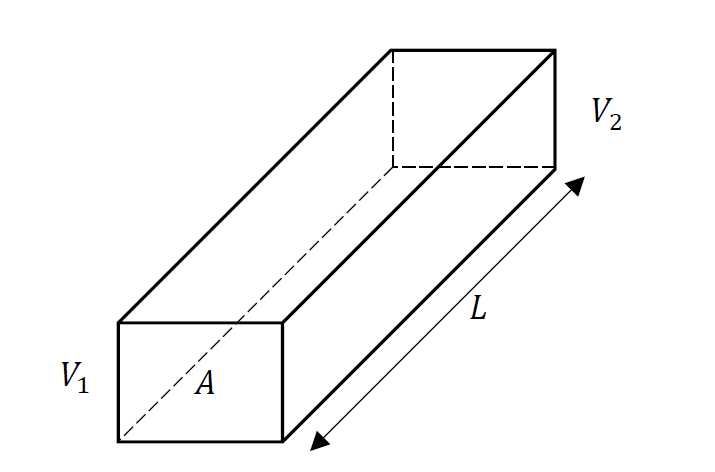

1 Introduction
The phenomena linking thermal energy transport and electrical currents within solid materials are known as the thermoelectric effects. You should already know that electrical currents in a wire follow Ohm’s law (Knight 2016)
\[I = \frac{1}{R}\Delta V \tag{1.1}\]
where \(I\) is the electrical current intensity, \(R > 0\) is the electrical resistance of a wire, and \(\Delta V\) is the potential difference between the endpoints of a wire. Consider a slab of a conducting materials as shown in Figure 1.1.

In this case the electrical current can be expressed as
\[I = \sigma\frac{A}{L}\Delta V \tag{1.2}\]
where \(A\) is the surface area of the slab cross-section, L is its length, and \(\sigma\) is the electrical conductivity of the material. The electrical resistance of the slab can be obtained as follows
\[R = \frac{L}{\sigma A} \tag{1.3}\]
A similar equation can be obtained for heat transport through the slab. If the two ends of the slab are kept at different temperatures, the heat flow \({Q}\) (\({W}\)) is proportional to \(\Delta T\) via(Segrè 2004)
\[{Q} = \kappa\frac{A}{L}\Delta T \tag{1.4}\]
Where \(\kappa > 0\) is the thermal conductivity (\(Wm^{- 1}K^{- 1}\)), and \(\Delta T\) is the temperature difference. Note the electrons are the main carriers of heat and electrical transport in metals. These similarities hint that there should be a connection between electrical and thermal currents. This connection is summarised by the thermoelectric effects. This phenomena has been confirmed experimentally.
1.1 History
In 1841, James Prescott Joule realised that an electric current has an inherent thermal effect, called the Joule effect (Martins 2022). Later in 1851, William Thomson realised that passing an electrical current through an unequally heated conductor released or absorbed heat depending on the direction of the heat and electrical currents and the type of material (Thomson 1856). The irreversible Joule effect is about two orders of magnitude larger than the reversible Thomson effect, but both occur simultaneously while a current passes through a material (Macia 2015). These thermoelectric effects make up the backbone for how we got to heat engines and heat pumps from thermoelectric materials.
It was Thomas Johann Seebeck who first observed that if you connect three homogenous conductors connected in series, each at a different temperature, an electric current flows around the closed circuit (Engel and Reid 2013). The circuit is known as thermoelectric (TE) circuit. Hence, the Seebeck effect describes the conversion of thermal energy into electrical energy in the form of an electrical current.
The Seebeck Voltage \(\Delta V_{S}\) of a TE circuit is proportional to the temperature difference of \(T_{H}\) and \(T_{C}\) (Macia 2015)
\[\Delta V_{s} = S\Delta T \tag{1.5}\]
where \(S(T)\) is a temperature dependent property of the junction materials, with units \(VK^{- 1}\).
Jean Charles Peltier reported that passing a current across a junction at thermal equilibrium caused it to absorb heat from the surroundings \(\left( \Delta Q_{P} < 0 \right)\), while if you reversed the current the junction released heat to the environment \(\left( \Delta Q_{P} < 0 \right)\) (Segrè 2004). This Peltier Effect was illustrated nicely by Friedrich Emil Lenz in 1838, who placed a drop of water on the junction of bismuth and antimony wires (Macia 2015). When Lenz passed a current through the junction, the water froze; then when Lenz reversed the current, the ice melted. This was the first demonstration of TE refrigeration. The Peltier Heat is proportional to current \(I\), duration \(\Delta t\) of the current applied via
\[\Delta Q_{P} = \Pi(T)I\Delta t \tag{1.6}\]
Where \(\Pi(T)\) is called the Peltier coefficient (Engel and Reid 2013).